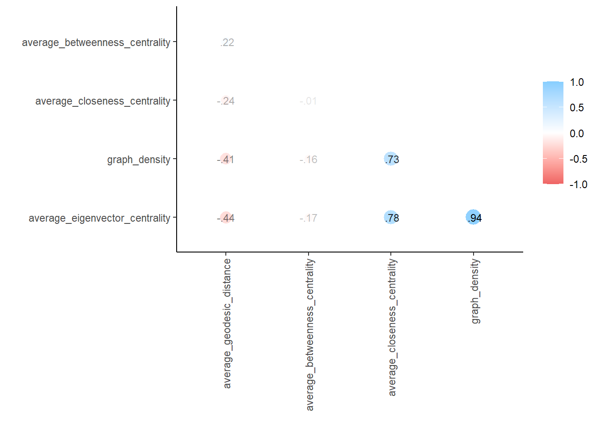
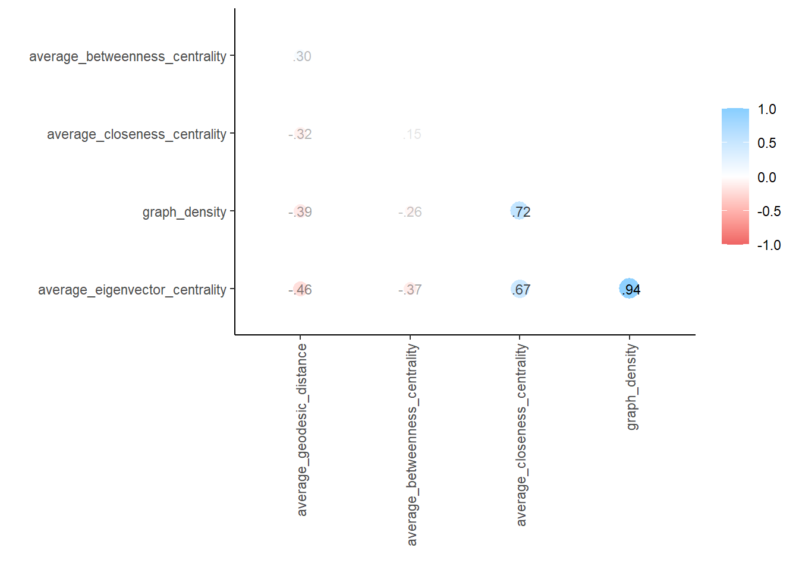
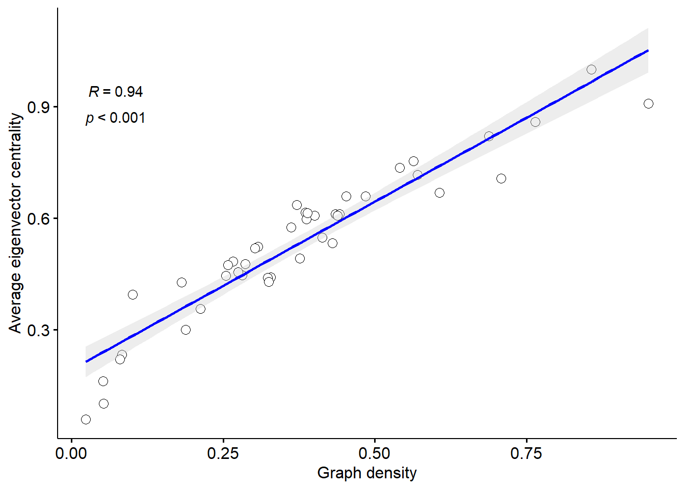
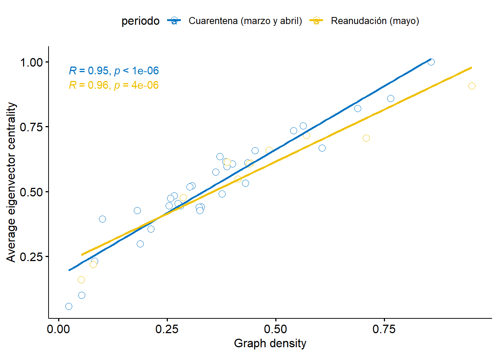
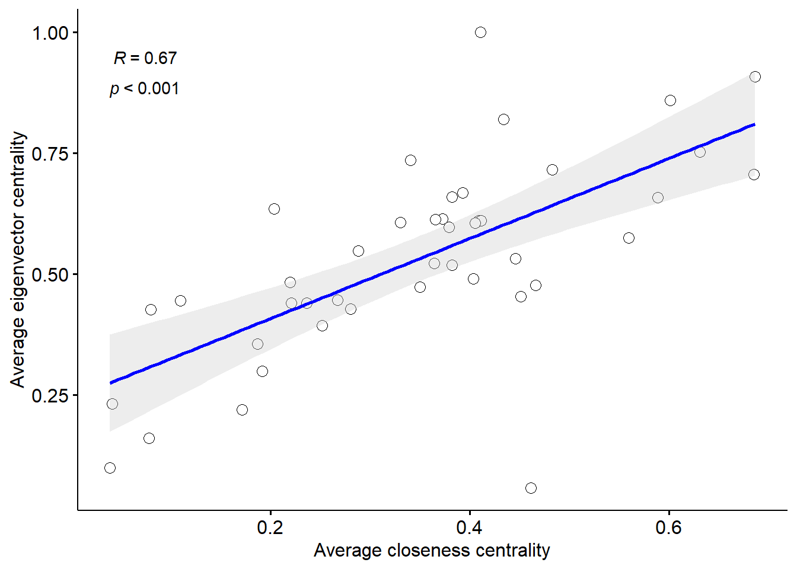
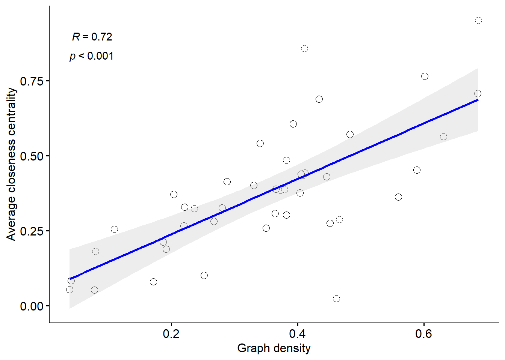
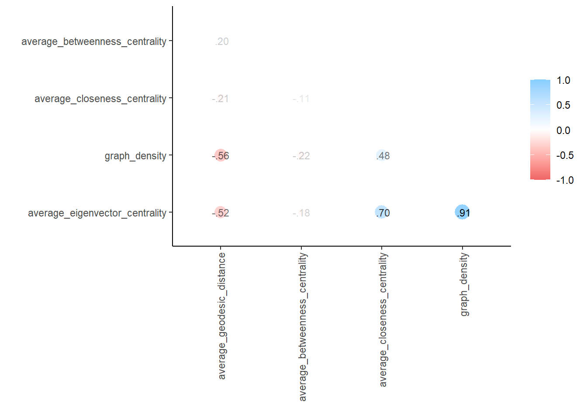
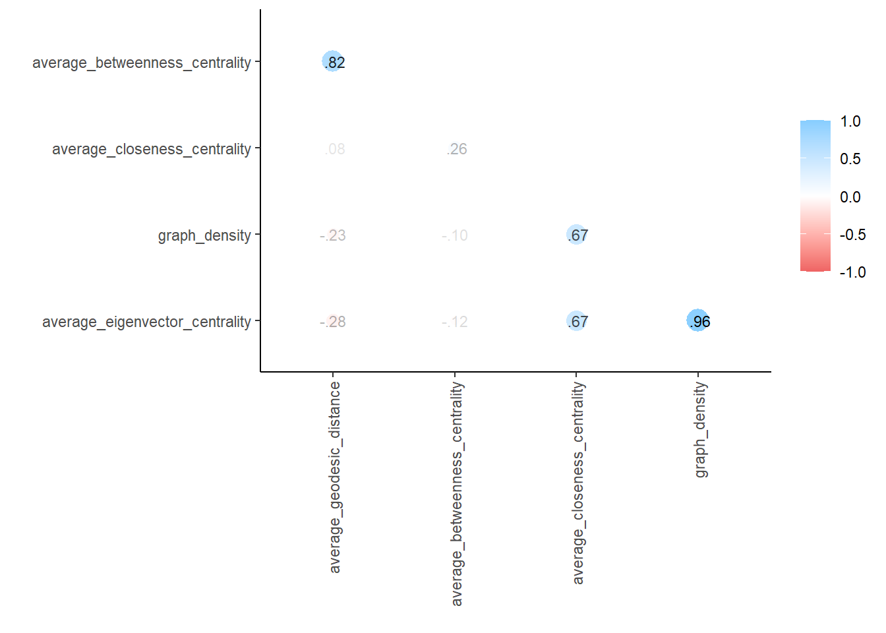

3. Análisis por tipo de hashtag
Objetivo
Realizar un análisis de la base de datos hashtag por tipo de hashtag:
- Lúdicos
- Políticos
- Crisis Sanitaria
- Apoyo Social
Observaciones
- Se excluyeron los hashtags con 50 o menos vértices usuarios (9 hashtags): sintonosyo, MientoComoPeru21, saliendodecuarentena, CuandoEstoSeAcabe, Dia40, RedDePersonas, MarionetaAlva, NoSalgoCuando, ElDoceDeAbrilYo.
Resumen
En la base de datos hashtags tenemos 24 variables y 117 observaciones distribuidas en:
| tipo | n |
|---|---|
| Apoyo Social | 12 |
| Crisis Sanitaria | 27 |
| Lúdico | 43 |
| Político | 35 |
| Total | 117 |
La matriz de correlación de las variables de centralidad nos muestran lo siguiente:

Por tipo
Lúdicos
Respecto a los hashtags lúdicos contamos con 43 hashtags.

- Se observa una correlación positiva importante entre
graph densityyaverage eigenvector centrality.
- Se observa una correlación positiva moderada entre
average closeness centralityyaverage eigenvector centrality,average closeness centralityygraph density.
Graph Density y Average eigenvector centrality

| graph density | |||||
|---|---|---|---|---|---|
| Coeffcient | Estimates | Conf. Int (95%) | Std. Error | T Statistic | P-Value |
| (Intercept) | -0.15 *** | -0.21 – -0.09 | 0.03 | -4.91 | <0.001 |
| average eigenvector centrality |
0.99 *** | 0.88 – 1.10 | 0.05 | 18.46 | <0.001 |
| Observations | 43 | ||||
| R2 / R2 adjusted | 0.893 / 0.890 | ||||
| * p<0.05 ** p<0.01 *** p<0.001 | |||||
Interacción con tiempo

| graph density | |||||
|---|---|---|---|---|---|
| Coeffcient | Estimates | Conf. Int (95%) | Std. Error | T Statistic | P-Value |
| (Intercept) | -0.12 *** | -0.19 – -0.06 | 0.03 | -3.70 | 0.001 |
| average eigenvector centrality |
0.92 *** | 0.80 – 1.04 | 0.06 | 15.33 | <0.001 |
| periodo [Reanudación (mayo)] |
-0.08 | -0.22 – 0.06 | 0.07 | -1.21 | 0.235 |
| average eigenvector centrality * periodo [Reanudación (mayo)] |
0.22 | -0.02 – 0.45 | 0.11 | 1.89 | 0.066 |
| Observations | 43 | ||||
| R2 / R2 adjusted | 0.907 / 0.900 | ||||
| * p<0.05 ** p<0.01 *** p<0.001 | |||||
Average closeness centrality y Average eigenvector centrality

| average closeness centrality |
|||||
|---|---|---|---|---|---|
| Coeffcient | Estimates | Conf. Int (95%) | Std. Error | T Statistic | P-Value |
| (Intercept) | 0.06 | -0.05 – 0.17 | 0.05 | 1.11 | 0.273 |
| average eigenvector centrality |
0.55 *** | 0.36 – 0.74 | 0.09 | 5.82 | <0.001 |
| Observations | 43 | ||||
| R2 / R2 adjusted | 0.452 / 0.439 | ||||
| * p<0.05 ** p<0.01 *** p<0.001 | |||||
Average closeness centrality y Graph density

| average closeness centrality |
|||||
|---|---|---|---|---|---|
| Coeffcient | Estimates | Conf. Int (95%) | Std. Error | T Statistic | P-Value |
| (Intercept) | 0.14 *** | 0.07 – 0.21 | 0.04 | 3.84 | <0.001 |
| graph density | 0.56 *** | 0.39 – 0.73 | 0.08 | 6.63 | <0.001 |
| Observations | 43 | ||||
| R2 / R2 adjusted | 0.517 / 0.505 | ||||
| * p<0.05 ** p<0.01 *** p<0.001 | |||||
Políticos
Respecto a los hashtags políticos contamos con 35 hashtags.

Crisis Sanitaria
Respecto a los hashtags sobre crisis sanitaria contamos con 27 hashtags.
